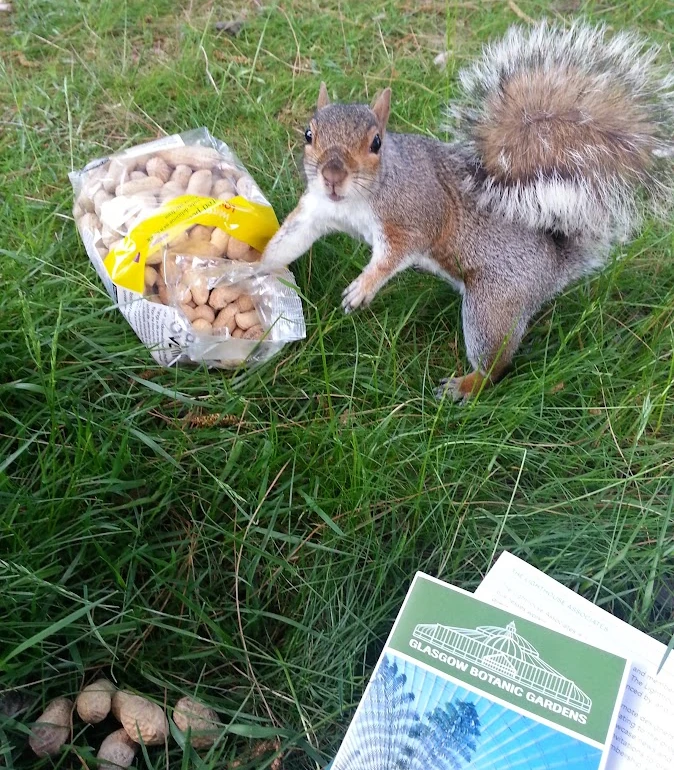

Scientific coordinator application · VEBITA
Quo vadis?
What can animal movement tell us about a changing world?
I’m Elisabeth, a physicist interested in how we share scientific ideas. I made this site to accompany my Senckenberg application and showcase my skills and personality.
